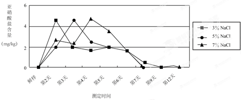

2015年北京市中考化学真题 · 科普阅读 第29题
29．（5分）阅读下面科普短文（原文作者：段翰英等）。
我国制作泡菜的历史悠久。制作泡菜是把新鲜蔬菜泡在低浓度的盐水里，经发酵而成。泡菜品种繁多、风味独特、口感鲜脆。
蔬菜中含有硝酸盐。硝酸盐对人体无直接危害，但转化成亚硝 酸盐后，就会产生危害。亚硝酸盐[如亚硝酸钠（）]与胃酸（主要成分是盐酸）反应，产生亚硝酸（）和氯化物（如）。亚硝酸不稳定，产生的二氧化氮进入血液与血红蛋白结合，导致中毒。
酸盐后，就会产生危害。亚硝酸盐[如亚硝酸钠（）]与胃酸（主要成分是盐酸）反应，产生亚硝酸（）和氯化物（如）。亚硝酸不稳定，产生的二氧化氮进入血液与血红蛋白结合，导致中毒。
泡菜中含亚硝酸盐吗？含量有多少？含量受什么因素影响呢？
经实验测定发现，食盐水浓度和泡制时间对泡菜中亚硝酸盐含量有一定影响。下图为室温下，食盐水浓度和泡制时间与芹菜泡制过程中亚硝酸盐含量的关系。

用不同的蔬菜进行测定，变化趋势与芹菜相似。
实验表明，发酵温度对泡菜中亚硝酸盐的生成量及生成时间也具有明显的影响。泡菜发酵过程中，泡制温度较高时，亚硝酸盐含量最大值出现的早，且数值低。这与温度较高有利于乳酸菌的繁殖有关。
实验还表明，泡制过程中添加姜汁和维生素C，都能有效地减少亚硝酸盐的生成。
现代医学证明，泡菜中的乳酸和乳酸菌对人体健康有益，具有抑制肠道中的腐败菌生长、降低胆固醇等保健作用。但是，有些泡菜盐分或糖分过高，对高血压和糖尿病等慢性病患者不利。另外，泡制过程也会造成某些营养素的流失。（有删改）
依据文章内容，回答下列问题。
（1）泡菜中的亚硝酸盐是由 转化成生的。[来源:学.科.网]
（2）亚硝酸钠能与盐酸反应，该反应属于基本反应类型中的 反应。
（3）室温下，用芹菜制作的泡菜，最佳食用时间是 （填字母序号，下同）。
A．泡制2－3天B．泡制5－6天C．泡制12天后
（4）下列关于制作泡菜的说法中，合理的是 。
A．最好加入一些姜汁
B．最好在较低温度下泡制
C．最好加入一些富含维生素C的水果
D．最佳食用期的泡菜中亚硝酸盐的含量与泡制时的食盐水浓度无关
（5）请你为喜欢吃泡菜的人提一条食用泡菜的建议： 。
【生产实际分析】